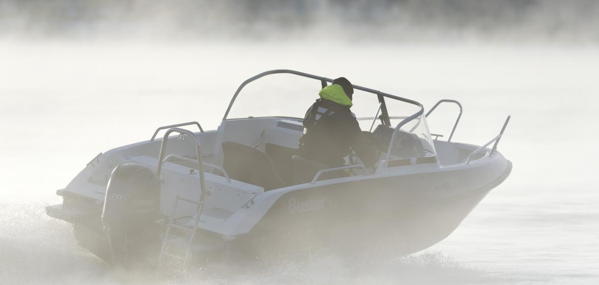

Катер Buster Le (Бустер Le)
Новый Buster Е на базе корпуса Buster L! Buster Le (Бустер Le) продолжает целенаправленное развитие серии Buster E. Новая модель разработана на базе тысячи раз проверенного, и заслуженно оцененного корпуса Buster L. Внутренняя часть, изготовленная из стеклопластика, впервые привносит в самый популярный класс пятиметровых лодок, новые возможности и эстетические, дизайнерские формы, не забывая при этом практичность и многофункциональность внутреннего пространства. Высокое, прочное ветровое стекло и дверь между консолями надёжно защищают путешественников от ветра и брызг. Удобство использования лодки в любую погоду повышает практичный отсек для хранения тента, который одновременно является просторным багажным отсеком.
Благодаря съёмным сиденьям-боксам лодка идеально подходит для походов выходного дня, рыбалки и перевозки грузов. Все модели серии «Е» – элегантные и экономичные. Высокое, обтекаемой формы, закруглённое ветровое стекло ещё лучше защищает водителя и путешественников от ветра. Достаточно тихое строение корпуса, большое количество багажных отсеков и практичные якорные боксы гарантируют непревзойдённый комфорт. Нескользящее, серое покрытие днища добавляет лодке практичности для водных прогулок или активных занятий водными видами спорта.
Buster L – самая популярная моторная лодка 21-го века в Финляндии и странах Скандинавии. Новая многофункциональная Buster Le (Бустер Le), со стильной внутренней частью из стеклопластика, имеет отличные ходовые характеристики и прекрасно дополняет линейку самого популярного модельного ряда Buster L. Отличное комфортабельное оснащение, поручни и кнехты из нержавеющей стали поднимают «Безупречный выбор» Buster на новый уровень.
Технические характеристики катера:
| Параметр | Buster Le |
|
Длина |
5.10 м |
|
Ширина |
2.05 м |
|
Масса (Без двигателя) |
450 кг |
|
Вместимость |
6 человек |
|
Рекоменд. мощность двигателя |
50 - 70 л.с. |
|
Емкость топливного бака |
56 л |
|
Осадка при полной нагрузке |
0,3 м |
|
Максимальная скорость |
32 узла |
|
V-угол дна |
16° |
Стандартное оборудование:
- Гидравлическое рулевое управление NFB
- Консоль управления, ветровое стекло
- Консоль левая, ветровое стекло
- Стационарная дверь между консолями
- Закрывающиеся багажные отсеки (система запирания замков одним ключом)
- Комплект мягких подушек
- Тент на корму
- Отсек для хранения тента
- Сиденье-бокс (3x45л.)
- Мягкие кресла Offshore 2шт. с чехлами
- Якорные боксы на корме, слева и справа
- Задние площадки на корме для спуска в воду
- Забортный трап
- Леерные ограждения, крепления и кнехты (нержавеющая сталь)
- Огнетушитель
- Чехол для аккумулятора
- Центральный выключатель с автоматическими предохранителями
- Автоматическая трюмная помпа
- Стационарный топливный бак
- Навигационные огни
- Мачта, съёмная
- Электрический разъём 12V
- Самоосушающийся кокпит
Дополнительное оборудование:
- Тент стояночный
- Штанга для буксировки вейкбордиста
- Сиденье-бокс 45 л.
- Мягкая подушка, сиденье-бокс, 45 л.

{kind=link}
{kind=link}
{kind=link}
{kind=link}
{kind=link}
{kind=link}